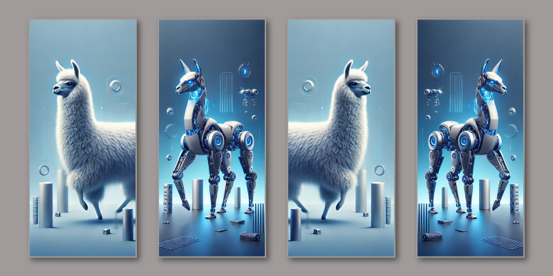
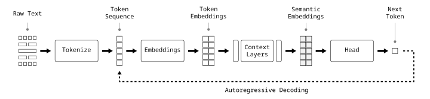
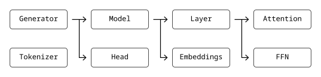
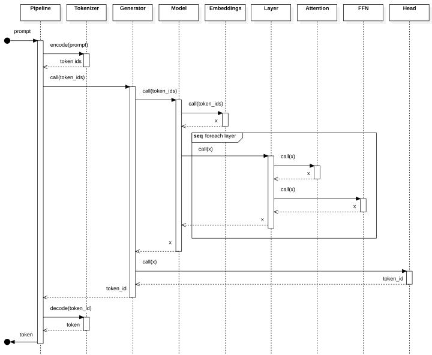

Transformer Teardown: Build Your Own Llama Development Kit
Build a Collection of Reusable Building Blocks You Can Mix and Match in Your Own LLM Research Experiments
December 11, 2024

In our last Transformer Teardown post, we dissected the Llama 3 language model from Meta. We walked through each stage of the pipeline one line of code at a time, getting a close-up view of the machinery powering a state-of-the-art generative Transformer.
The goal of this post is to use what we learned to create a lightweight Llama development kit we can use to run our own experiments.
But wait, why can't I just use transformers or ollama or llama.cpp?
You certainly could. There are plenty of open source Llama implementations out there. The problem is they all have baggage. They're over complicated with configuration switches and extra options to the point that the main ideas are completely obscured. Not only does this make it hard to understand what's happening, it makes it even harder to run experiments.
Building your own lightweight stack of Llama components will do wonders for your Transformer fundamentals and you'll walk away with a collection of reusable building blocks you can mix and match in your own research.
Pipeline Review
Let's quickly review the stages of a text generation pipeline we learned about in the previous post. The Tokenize stage splits raw text into tokens. The Embeddings stage maps token ids to token embeddings. The Context Layers stage transforms token embeddings into semantic embeddings through layers of attention and feedforward networks. The Head stage uses the semantic embeddings as features to predict the next token in the sequence. The predicted token is fed back to the beginning of the pipeline and the process repeats.

Components
In the last post, we broke the pipeline in Figure 1 into tiny pieces. In this post, we'll reassemble the pieces into a collection of reusable PyTorch modules shown in Figure 2. Tokenizer translates between raw text and token ids. Generator is implemented in terms of Model and Head submodules. Model combines an Embeddings module with multiple Layers. Each Layer is broken into Attention and FFN submodules. Once Model has transformed token embeddings to semantic embeddings, Head predicts the next token id. Finally, Generator implements the autoregressive decoding loop, feeding the predicted tokens back to Model.

Figure 3 illustrates the interactions between each component in the process of predicting the next token.

Over the rest of this post we'll implement each of these components along with a few utilities for loading model configuration and parameters.
If you want to jump right to the end, you can find a complete implementation of the Llama Development Kit on GitHub.
Model Config
Meta has published multiple versions and configurations of Llama. Each flavor of Llama is represented by a checkpoint that includes a model configuration file (params.json), the model parameters (consolidated.00.pth), and the tokenizer model (tokenizer.model).
Here, we define a ModelConfig data structure and load_config function to load the checkpoint-specific hyperparameters from params.json. Examples include the number of parameters in each layer (d_model), the number of layers (n_layers), and the number of attention heads (n_heads). We'll come back to the model parameters at the end.
class ModelConfig(NamedTuple):
"""Llama3 model config."""
checkpoint_path: Path
vocab_size: int
d_model: int
d_head: int
d_ffn: int
n_layers: int
n_heads: int
n_kv_heads: int
rms_norm_eps: float
rope_theta: float
def load_config(checkpoint_name: str, **kwargs) -> ModelConfig:
"""Load Llama3 config from checkpoint params.json."""
# Build checkpoint_path
checkpoints_path = Path("~/.llama/checkpoints").expanduser()
checkpoint_path = checkpoints_path / checkpoint_name
# Load hyperparameters
hparams_path = checkpoint_path / "params.json"
hparams = json.loads(hparams_path.read_text())
# Calculate d_ffn from 8/3 * d_model rounded to nearest multiple_of
d_model = hparams["dim"]
ffn_dim_multiplier = hparams["ffn_dim_multiplier"]
multiple_of = hparams["multiple_of"]
d_ffn = int(8 / 3 * d_model * ffn_dim_multiplier)
d_ffn = multiple_of * ((d_ffn + multiple_of - 1) // multiple_of)
data = {
"checkpoint_path": checkpoint_path,
"vocab_size": hparams["vocab_size"],
"d_model": hparams["dim"],
"n_layers": hparams["n_layers"],
"rms_norm_eps": hparams["norm_eps"],
"n_heads": hparams["n_heads"],
"d_head": int(hparams["dim"] / hparams["n_heads"]),
"n_kv_heads": hparams["n_kv_heads"],
"rope_theta": hparams["rope_theta"],
"d_ffn": d_ffn,
}
# Override with kwargs
data |= kwargs
return ModelConfig(**data)
Embeddings
Next, we'll implement a LlamaEmbeddings module that maps token ids to token embeddings.
class LlamaEmbeddings(nn.Embedding):
"""Llama token embeddings layer."""
def __init__(self, config: ModelConfig, device: torch.device):
super().__init__(
num_embeddings=config.vocab_size,
embedding_dim=config.d_model,
device=device,
)
Context Layers
Next, we'll implement LlamaAttention, LlamaFFN, and LlamaLayer modules that implement the attention and feedforward network blocks in a single decoder layer. There is a lot going on here. For the purposes of this post, the important takeaway is simply that the logic is arranged into reusable building blocks.
For more details on the implementation, please refer to Transformer Teardown: Llama 3.1 where we walk through each step one by one.
Rotary Position Embedding (RoPE)
def rope_frequencies(config: ModelConfig, device: torch.device, n: int):
"""Compute RoPE cos and sin rotation matrices."""
# Hyperparameters
base = config.rope_theta
d = config.d_head
# Calculate thetas
i = torch.arange(d // 2, device=device)
thetas = base ** (-2 * i / d)
# Duplicate each theta, e.g.
# [theta_0, theta_1] -> [theta_0, theta_0, theta_1, theta_1]
thetas = thetas.repeat_interleave(2)
# Repeat thetas for each position from 0 to n and
# stack in an (n, d_head) matrix
theta_stack = torch.stack([m * thetas for m in range(n)])
# Apply cos, sin
r_cos = torch.cos(theta_stack)
r_sin = torch.sin(theta_stack)
# Sanity check
assert r_cos.shape[0] == n and r_cos.shape[1] == config.d_head
assert r_sin.shape[0] == n and r_sin.shape[1] == config.d_head
return r_cos, r_sin
def rope_swap(x):
"""Maps [x0, x1, x2, x3] -> [-x1, x0, -x3, x2]."""
# Preserve original shape
s = x.shape
# Split into pairs, swap, and restore shape
x = x.reshape(-1, 2).flip(-1).view(s)
# Multiply every even index along the last dimension by -1
# e.g. [x0, x1, x2, x3] -> [-x0, x1, -x2, x3]
x[..., ::2] *= -1
return x
def rope_rotate(x, r_cos, r_sin):
"""Rotate embeddings using RoPE transform."""
return (x * r_cos) + (rope_swap(x) * r_sin)
Attention
class LlamaAttention(nn.Module):
"""Llama attention layer."""
def __init__(self, config: ModelConfig, device: torch.device):
super().__init__()
self.config = config
# Input normalization
self.normalize = RMSNorm(
config.d_model,
config.rms_norm_eps,
).to(device)
# Queries projection
self.w_queries = nn.Linear(
in_features=config.d_model,
out_features=config.n_heads * config.d_head,
bias=False,
device=device,
)
# Keys projection
self.w_keys = nn.Linear(
in_features=config.d_model,
out_features=config.n_kv_heads * config.d_head,
bias=False,
device=device,
)
# Values projection
self.w_values = nn.Linear(
in_features=config.d_model,
out_features=config.n_kv_heads * config.d_head,
bias=False,
device=device,
)
# Output projection
self.w_output = nn.Linear(
in_features=config.d_model,
out_features=config.d_model,
bias=False,
device=device,
)
@override
def forward(self, x: Tensor, r_cos: Tensor, r_sin: Tensor) -> Tensor:
# Match input device
device = x.device
# Save residuals
residual = x
# Normalize inputs
x = self.normalize(x)
# Project inputs to query, key, value spaces
q = self.w_queries(x)
k = self.w_keys(x)
v = self.w_values(x)
# Split attention heads
q = self._split_heads(q, self.config.n_heads)
k = self._split_heads(k, self.config.n_kv_heads)
v = self._split_heads(v, self.config.n_kv_heads)
# Expand key/value groups
reps = self.config.n_heads // self.config.n_kv_heads
k = k.repeat_interleave(reps, dim=0)
v = v.repeat_interleave(reps, dim=0)
# Encode positions by rotating queries and keys
q = rope_rotate(q, r_cos, r_sin)
k = rope_rotate(k, r_cos, r_sin)
# Compute masked attention bias M
n = len(x)
mask = torch.ones(n, n, dtype=torch.bool, device=device) \
.tril(diagonal=0)
m = torch.zeros(n, n, device=device) \
.masked_fill_(mask.logical_not(), float("-inf"))
# Compute attention for all heads in parallel
scores = q @ k.transpose(-2, -1) / np.sqrt(self.config.d_head) + m
a = F.softmax(scores, dim=-1) @ v
# Combine attention heads
a = self._combine_heads(a)
# Project outputs back to model space
a = self.w_output(a)
# Merge outputs with residuals
x = residual + a
return x
def _split_heads(self, x: Tensor, n_heads: int):
"""Split attention heads."""
return x.view(-1, n_heads, self.config.d_head).transpose(-3, -2)
def _combine_heads(self, x):
"""Combine attention heads."""
return x.transpose(-3, -2).contiguous().view(-1, int(self.config.n_heads * self.config.d_head))
FFN
class LlamaFFN(nn.Module):
"""Llama feed-forward network."""
def __init__(self, config: ModelConfig, device: torch.device):
super().__init__()
# Input normalization
self.normalize = RMSNorm(
config.d_model,
config.rms_norm_eps,
).to(device)
# Input projection
self.w_input = nn.Linear(
in_features=config.d_model,
out_features=config.d_ffn,
bias=False,
device=device,
)
# Gate projection
self.w_gate = nn.Linear(
in_features=config.d_model,
out_features=config.d_ffn,
bias=False,
device=device,
)
# Output projection
self.w_output = nn.Linear(
in_features=config.d_ffn,
out_features=config.d_model,
bias=False,
device=device,
)
@override
def forward(self, x: Tensor) -> Tensor:
# Save residuals
residual = x
# Normalize inputs
x = self.normalize(x)
# Apply SwiGLU transform
f = F.silu(self.w_gate(x)) * self.w_input(x)
# Project outputs back to model space
f = self.w_output(f)
# Merge outputs with residuals
x = residual + f
return x
Layer
class LlamaLayer(nn.Module):
"""Llama transformer layer."""
def __init__(self, config: ModelConfig, device: torch.device):
super().__init__()
self.attention = LlamaAttention(config, device)
self.ffn = LlamaFFN(config, device)
@override
def forward(self, x: Tensor, r_cos: Tensor, r_sin: Tensor) -> Tensor:
# Attention
x = self.attention(x, r_cos, r_sin)
# FFN
x = self.ffn(x)
return x
Model
Next, we'll implement a LlamaModel component that bundles the embeddings and context layers together. This model = embeddings + context layers design is a common pattern in Hugging Face and other Transformer implementations.
class LlamaModel(nn.Module):
"""Combines embeddings and layers in reusable module."""
def __init__(self, config: ModelConfig, device: torch.device):
super().__init__()
self.config = config
self.embeddings = LlamaEmbeddings(config, device)
self.layers = nn.ModuleList(
LlamaLayer(config, device) for _ in range(config.n_layers)
)
@override
def forward(self, token_ids: Tensor) -> Tensor:
# Match input device
device = token_ids.device
# Compute cos and sin rotation matrices once for entire sequence
r_cos, r_sin = rope_frequencies(self.config, device, len(token_ids))
# Map tokens to embeddings
x = self.embeddings(token_ids)
# Transform token embeddings to semantic embeddings
for layer in self.layers:
x = layer(x, r_cos, r_sin)
return x
Head
Next, we'll implement LlamaHead and LlamaCausalLMHead modules. LlamaHead is intended to serve as an abstract base class for task-specific head layers. LlamaCausalLMHead extends LlamaHead to implement "causal language modeling" (aka. next token prediction) based on temperature, top_k, and top_p token sampling.
class LlamaHead(nn.Module):
"""Llama prediction head."""
def __init__(self, config: ModelConfig, device: torch.device):
super().__init__()
# Input normalization
self.normalize = RMSNorm(
config.d_model,
config.rms_norm_eps,
).to(device)
# Output projection
self.w_output = nn.Linear(
in_features=config.d_model,
out_features=config.vocab_size,
bias=False,
device=device,
)
@override
def forward(self, x: Tensor) -> Tensor:
# Normalize inputs
x = self.normalize(x)
# Use last embedding to represent the entire sequence
x = x[-1]
# Project outputs to token space
x = self.w_output(x)
return x
class LlamaCausalLMHead(LlamaHead):
"""Llama causal language model head."""
def __init__(
self,
config: ModelConfig,
device: torch.device,
temperature: float | None = None,
top_k: int | None = None,
top_p: float | None = None,
):
super().__init__(config, device)
self.temperature = default_arg(temperature, 0.6)
self.top_k = default_arg(top_k, 50)
self.top_p = default_arg(top_p, 0.9)
@override
def forward(self, x: Tensor) -> int:
# Project semantic embeddings to token space
x = super().forward(x)
# Temperature
# -----------
# If temperature is 0, return the top token
if self.temperature == 0:
return torch.argmax(x, dim=-1).item()
# Apply temperature
x = x / self.temperature
# Ranking
# -------
# Convert logits to probabilities
probs = F.softmax(x, dim=-1)
# Sort probabilities in descending order
probs, indices = probs.sort(descending=True)
# Top K
# -----
# Retain top k tokens
probs = probs[: self.top_k]
# Top P
# -----
# Find cutoff where cumulative probability exceeds top_p
cumulative_mask = probs.cumsum(dim=-1) > self.top_p
threshold_index = torch.argmax(cumulative_mask).item()
# Only apply threshold if top_p was exceeded
if cumulative_mask.any():
probs = probs[: threshold_index + 1]
# Random Selection
# ----------------
# Sample from remaining tokens weighted by probability
sampled_index = torch.multinomial(probs, 1)
# Convert sampled_index to original logits
token_id = indices[sampled_index]
return token_id.item()
Generator
Next, we'll implement the LlamaGenerator module that combines LlamaModel with LlamaCausalLMHead. Given a sequence of token ids, LlamaGenerator starts by predicting the next token in the sequence before feeding the predicted token back into the model in an autoregressive decoding loop. LlamaGenerator continues generating new tokens until it predicts a stop token or exceeds the max_tokens parameter.
class LlamaGenerator(nn.Module):
"""Llama text generator."""
def __init__(
self,
config: ModelConfig,
device: torch.device,
stop_tokens: Sequence[int] | None = None,
temperature: float | None = None,
top_k: int | None = None,
top_p: float | None = None,
max_tokens: int | None = None,
):
super().__init__()
self.device = device
self.stop_tokens = default_arg(stop_tokens, ())
self.max_tokens = default_arg(max_tokens, 32)
self.model = LlamaModel(config, device)
self.head = LlamaCausalLMHead(
config,
device,
temperature=temperature,
top_k=top_k,
top_p=top_p,
)
def __call__(self, token_ids: Sequence[int], **kwargs) -> Iterator[int]:
"""Generate token ids until stop token or we exceed max tokens."""
# Prepare models
self.model.eval()
self.head.eval()
# Make mutable copy of token ids
token_ids = list(token_ids)
# Override fields with kwargs
max_tokens = kwargs.get("max_tokens", self.max_tokens)
stop_tokens = kwargs.get("stop_tokens", self.stop_tokens)
with torch.no_grad():
# Generate output until we get a stop token or we exceed max_tokens.
for _ in range(max_tokens):
# Load token ids into a tensor
x = torch.tensor(token_ids, device=self.device)
# Transform token_ids into semantic embeddings
x = self.model(x)
# Predict next token
token_id = self.head(x)
# Check stopping criteria
if token_id in stop_tokens:
break
# Yield token
yield token_id
# Append to end of sequence
token_ids.append(token_id)
Tokenizer
Llama's tokenizer is based on the tiktoken library from OpenAI. Here, we'll define a load_tokenizer function loads a preconfigured tiktoken model from the Llama checkpoint into a Tokenizer object provided by llama-models.
from llama_models.llama3.api import Tokenizer
def load_tokenizer(config: ModelConfig) -> Tokenizer:
"""Load tokenizer from checkpoint."""
# Load tiktoken model
return Tokenizer(str(config.checkpoint_path / "tokenizer.model"))
Configure GPU
Before we go further, we need to quickly touch on GPU configuration. (While you could theoretically experiment with Llama inference using CPUs only, I have not tried it.)
Personally, I have had great success experimenting with Llama models on a 64GB M1 MacBook. Apple's unified memory architecture shares the 64GB between CPU and GPU, providing much more GPU accessible memory than you can usually find without a dedicated GPU cluster.
If you're experienced at reading PyTorch code, you may have noticed our Llama modules take the PyTorch device as a contructor argument. This is not a standard practice as far as I know. Usually, you would initialize the PyTorch module in CPU memory before transfering the entire thing to the GPU by calling model.to(device).
While common, this approach is orders of magnitude slower. The reason is the billion plus model parameters are initialized by the CPU. On my M1 MacBook, I found this can take 20 to 30 seconds just to create the model. By passing the GPU device to the model initializer, the time to create the model drops to 500ms.
Rather than hardcode the GPU device, we define a torch_device function that leverages the GPU if you have one and gracefully falls back to the CPU if you don't. As implemented, torch_device supports both NVIDIA and Apple GPUs but could easily be extended to support others.
def torch_device() -> torch.device:
"""Configure gpus."""
# NVIDIA
if torch.cuda.is_available():
return torch.device("cuda")
# Apple
if torch.backends.mps.is_available():
return torch.device("mps")
# Fall back to CPU
return torch.device("cpu")
We've now implemented everything we need to create a Llama model. Let's take it for a spin using the Llama3.2-3B checkpoint. We'll load the model's hyperparameters into a ModelConfig object and then use this to initialize a LlamaGenerator.
# Load model config for Llama 3.2 3B checkpoint
config = load_config("Llama3.2-3B")
# Configure GPU
device = torch_device()
# Create tokenizer
tokenizer = load_tokenizer(config)
# Create generator
generator = LlamaGenerator(config, device, stop_tokens=tokenizer.stop_tokens)
Model Parameters
At this point, it's important to note that the 3 billion model parameters in generator are randomly initialized. This means our model is completely untrained. Our next step is to load the pre-trained model weights from the checkpoint into our model. We'll define a load_parameters function that returns a PyTorch state_dict that maps module names to weight tensors.
# Maps parameter names to weights
ModelParameters = Mapping[str, Tensor]
def load_parameters(config: ModelConfig, **kwargs) -> ModelParameters:
"""Load model state from checkpoint."""
# Load state from checkpoint
params = torch.load(
config.checkpoint_path / "consolidated.00.pth",
weights_only=True,
**kwargs,
)
# Remap Meta's parameter names
output_params = {}
# Embeddings
output_params |= {
"model.embeddings.weight": params["tok_embeddings.weight"],
}
# Layers
for layer_id in range(config.n_layers):
output_params |= {
f"model.layers.{layer_id}.attention.normalize.weight": params[
f"layers.{layer_id}.attention_norm.weight"
],
f"model.layers.{layer_id}.attention.w_queries.weight": params[
f"layers.{layer_id}.attention.wq.weight"
],
f"model.layers.{layer_id}.attention.w_keys.weight": params[
f"layers.{layer_id}.attention.wk.weight"
],
f"model.layers.{layer_id}.attention.w_values.weight": params[
f"layers.{layer_id}.attention.wv.weight"
],
f"model.layers.{layer_id}.attention.w_output.weight": params[
f"layers.{layer_id}.attention.wo.weight"
],
f"model.layers.{layer_id}.ffn.normalize.weight": params[
f"layers.{layer_id}.ffn_norm.weight"
],
f"model.layers.{layer_id}.ffn.w_input.weight": params[
f"layers.{layer_id}.feed_forward.w3.weight"
],
f"model.layers.{layer_id}.ffn.w_gate.weight": params[
f"layers.{layer_id}.feed_forward.w1.weight"
],
f"model.layers.{layer_id}.ffn.w_output.weight": params[
f"layers.{layer_id}.feed_forward.w2.weight"
],
}
# Head
output_params |= {
"head.normalize.weight": params["norm.weight"],
"head.w_output.weight": params["output.weight"],
}
return output_params
Next, we'll use load_parameters to load the pre-trained weights into generator. We specify map_location=device to load the parameters directly to the GPU, shaving off another couple hundred milliseconds.
# Load model parameters from checkpoint
generator.load_state_dict(load_parameters(config, map_location=device))
<All keys matched successfully>
Pipeline
To pull all the pieces together, we'll define a generate_text function that implements the entire end-to-end text generation pipeline.
def generate_text(
tokenizer: Tokenizer,
generator: LlamaGenerator,
prompt: str,
**kwargs,
) -> Iterator[str]:
"""Generate text one token at a time."""
# Split prompt into tokens
token_ids = tokenizer.encode(prompt, bos=True, eos=False)
# Generate new token ids
for token_id in generator(token_ids, **kwargs):
# Decode token id
token = tokenizer.decode([token_id])
yield token
Humpy Dumpty
We'll put your Llama development kit to work on real experiments in a series of upcoming posts. For now, drum roll please..., it's demo time.
prompt = "humpty dumpty sat on"
stdout.write(prompt)
for token in generate_text(tokenizer, generator, prompt, max_tokens=20):
stdout.write(token)
stdout.flush()
humpty dumpty sat on a wall, humpty dumpty had a great fall
humpty dumpty sat on a wall
Recap
Congrats! You made it to the end of another Transformer Teardown. We took what we learned in the Llama 3.1 Transformer Teardown and created a toolkit of lightweight, reusable Llama components you can easily mix, match, and extend in your own research experiments.
Look for upcoming posts where we can put your Llama development kit to work!